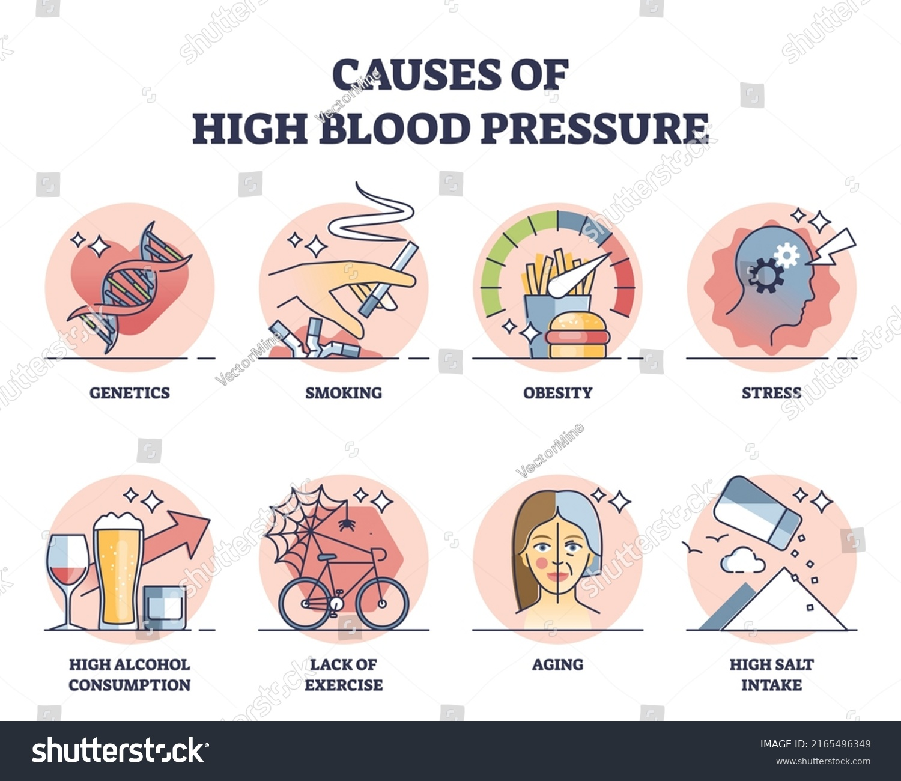
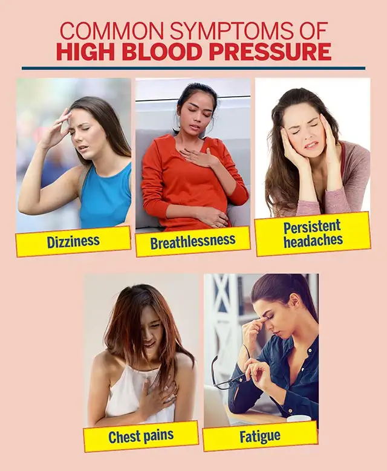
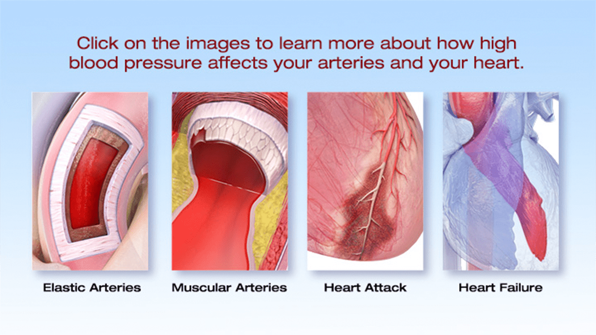
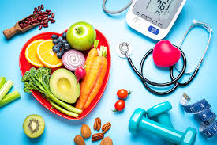

Understanding High Blood Pressure

Causes
- Obesity – Extra weight increases pressure on arteries.
- High Salt Intake – Causes fluid retention and pressure rise.
- Stress – Triggers temporary BP spikes.
- Lack of Physical Activity – Weakens the heart over time.
- Smoking and Alcohol – Damages arteries and raises BP.

Symptoms
- Headaches – Especially in the morning.
- Dizziness – Feeling faint or lightheaded.
- Blurred Vision – Due to eye vessel strain.
- Chest Pain – May indicate heart stress.
- Nosebleeds – In severe hypertension cases.

Effects
- Heart Attack – From artery damage.
- Stroke – Caused by vessel rupture in brain.
- Kidney Damage – High BP harms kidney function.
- Vision Loss – Due to retinal vessel damage.
- Memory Problems – Reduced brain blood flow.

Prevention & Cure (Ayurveda)
- Herbal Support – Use herbs like Sarpagandha, Ashwagandha, and Arjuna.
- Satvik Diet – Reduce salt and include potassium-rich foods.
- Lifestyle & Yoga – Practice yoga like Shavasana and Anulom Vilom.
- Detox Therapies – Virechana and medicated basti help BP control.
- Mind-Body Balance – Meditation and daily routine reduce stress.